무선설비기사 (2008-05-11 기출문제)
1과목: 디지털 전자회로
1. 그림과 같은 AM 변조회로는 어떤 변조방식인가?
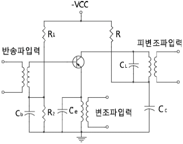
- 에미터 변조
- 베이스 변조
- 콜렉터 변조
- 에미터-베이스 변조
(정답률: 60%)

2. 다음 병렬공진회로에서 공진 주파수 fo의 관계식으로 옳은 것은?
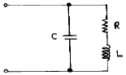
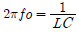
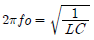
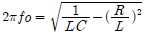
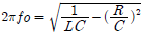
(정답률: 72%)
3. 다음 회로의 발진기는?
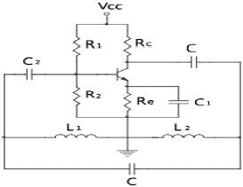
- Colpitts
- Hartley
- Wien-Bridge
- Crystal
(정답률: 90%)
4. 다음 중 그림의 바이어스 회로에서 안정도(Stability)를 좋게 하려면 어떻게 하여야 하는가?
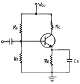
- RE를 적게하고 R1을 크게한다.
- RC를 크게 하고 VCC를 높게 한다.
- R1과 R2를 크게 하고 RE를 적게 한다.
- RE를 크게 하고 R1과 R2를 적게 한다.
(정답률: 알수없음)
5. 다음 중 환형 계수기(ring counter)와 같은 기능을 갖는 것은?
- BCD 계수기
- 가역 계수기
- 시프트 레지스터
- 순환 시프트 레지스터
(정답률: 70%)
6. 2n개의 입력신호 중 1개를 선택하여 출력하는 기능을 갖는 것은?
- Encoder
- Decoder
- Mux
- Latch
(정답률: 82%)
7. 다음 그림의 회로는?
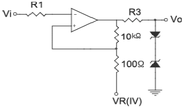
- 클램프 회로
- 차동증폭 회로
- 슬라이서 회로
- 시미트트리거 회로
(정답률: 82%)
8. 부퀘환회로 사용시 얻을 수 있는 내용이 아닌 것은?
- 입.출력 임피던스를 변화 시킬 수 있다.
- 증폭기의 전달이득(Avf)이 h정수의 변화에 민감하다.
- 주파수 특성이 좋아진다.
- 동작에 있어서 선형성이 좋아진다.
(정답률: 알수없음)
9. 다음 중 두 입력이 같을 때에만 1을 출력하는 게이트는?
- AND 게이트
- OR 게이트
- Exclusive OR 게이트
- Exclusive NOR 게이트
(정답률: 50%)
10. 그림에 표시한 회로에서 출력정압 VO는 입력전압 VS와 어떤 관계가 있는가?
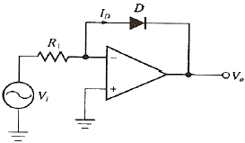
- VO는 VS의 R배로 증폭된다.
- VO는 VS의 지수로 나타난다.
- VO는 VS의 역수에 비례한다.
- VO는 VS의 자연대수에 비례한다.
(정답률: 60%)
11. 다음 카르노(Karnaugh)도의 논리식은?(오류 신고가 접수된 문제입니다. 반드시 정답과 해설을 확인하시기 바랍니다.)
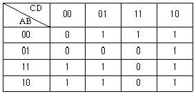
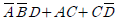
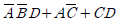
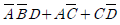
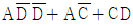
(정답률: 알수없음)
12. 저주파 증폭기의 출력에서 기본파 전압 성분이 50[V], 제 2 고조파 전압 성분이 4[V], 제3고조파 전압 성분이 3[V]일 경우 이 증폭기의 왜율은?
- 50[%]
- 10[%]
- 15[%]
- 20[%]
(정답률: 알수없음)
13. 다음 중 평형변조 회로를 사용하는 주 목적은?
- 변조도를 크게 하기 위해서
- 직선성을 개선하고 변조 일그러짐을 없애기 위해서
- SSB파를 얻기 위해서
- 변조 전력을 줄이기 위해서
(정답률: 62%)
14. 개루프 전압이득이 40[dB]인 저주파 증폭기에서 비직선 일그러짐이 10[%]일 때, 이것을 1[%]로 개선하기 위한 전압궤환율 β는?
- 1/40
- 9/100
- 9/1000
- 11/1000
(정답률: 알수없음)
15. 다음과 같은 회로의 출력 임피던스는 약 얼마인가?(단, rd=10[kΩ], μ=50, Rd=Rs=1[kΩ])
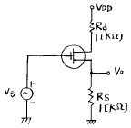
- 370 [Ω]
- 216 [Ω]
- 75 [Ω]
- 50 [Ω]
(정답률: 알수없음)
16. 다음 논리회로의 논리식이 옳은 것은?(단, 정논리이다.)
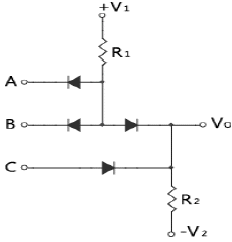
- Vo = (A + B)C
- Vo = AB + C
- Vo = A + B + C
- Vo = A + BC
(정답률: 82%)
17. 다음 회로에서 그림과 같은 입력에 대해 출력파형은? (단, 다이오드 D1, D2와 연산증폭기는 이상적이다.)
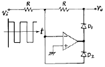
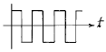
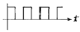
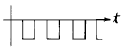
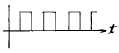
(정답률: 75%)
18. 다음 NAND 게이트로 구성된 논리회로의 입력(A, B)에 대한 출력(Y)은?
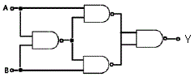
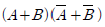
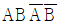
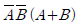
- AB
(정답률: 70%)
19. A급 증폭기에서 입력신호전압이 정현파일 때 출력전력은?
- 입력 신호전압의 크기에 비례한다.
- 입력 신호전압의 제곱에 비례한다.
- 입력 신호전압의 주파수에 비례한다.
- 입력 신호전압의 주파수에 반비례한다.
(정답률: 73%)
20. 그림의 연산증폭기의 전달함수 G(s) = (
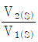
)는?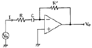
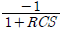
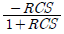
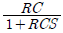
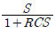
(정답률: 73%)
2과목: 무선통신 기기
21. PLL(Phase Locked Loop)에 대한 설명 중 적합하지 않은 것은?
- 주파수 신세사이져, 검파기 등에 활용된다.
- Loop Filter는 대역 차단(band reject) 특성을 갖는다.
- VCO는 Voltage controlled oscillator의 약자로 전압제어발진기 이다
- PLL을 구성하는 요소는 phase detector, loop filter, VCO 등 이다
(정답률: 알수없음)
22. 선박용 무선송신기의 안테나 결활회로는 주로 π형 결합회로를 쓴다. 이의 설치 목적으로 가장 적합한 것은?
- 송신기 출력의 안정을 유지하기 위하여
- 송신주파수의 안정을 유지하기 위하여
- 송신기와 안테나의 간섭을 피하기 위하여
- 송신기의 출력을 안테나에 최대로 공급하기 위하여
(정답률: 42%)
23. GPS에 대한 설명 중 가장 적합하지 않은 것은?
- GPS 시스템의 구성은 크게 관제부문, 위성부문, 사용자 부문으로 이루어진다.
- GPS 위성은 약 20200[Km] 상공에서 12시간을 주기로 지구 주위를 돌며, 궤도면은 지구의 적도면과 약 65도의 각도를 이루고 있다.
- GPS 수신기는 위성으로부터 수신받은 신호를 처리하여 수신기의 위치와 속도, 시간을 계산하는데 4개 이상 위성의 동시 관측을 필요로 한다
- GPS 위치 측정의 오차 인자 중 전리층 및 대류층의 굴절에 의한 것이 가장 영향력(오차범위)이 크다.
(정답률: 알수없음)
24. FM 수신기의 진폭제한 방법으로 적합하지 않은 것은?
- 다이오드를 이용하는 방법
- 차동증폭기를 이용하는 방법
- 수정 등의 필터를 이용하는 방법
- 트랜지스터의 포화특성을 이용하는 방법
(정답률: 알수없음)
25. 음성의 기저대역 4[KHz]를 16[KHz]로 표본화하고 8비트로 부호화 해서 16진 QAM으로 전송하는 시스템에 대한 설명으로 적합하지 않은 것은?
- 전송속도는 128[Kbit/s] 이다.
- 변조속도는 32000[baud] 이다.
- 엘리어싱 현상이 발생하지 않는다.
- 16진 P나 변조방식보다 동일한 전송에너지에 대해 오류 확률이 높다.
(정답률: 90%)
26. M진 PSK에서 반송파 위상간의 위상차는? (단, 위상 간격은 등간격이다)
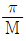
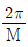
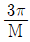
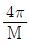
(정답률: 80%)
27. 무선 수신기에서 잡음을 줄이는 방법에 대한 설명으로 적합하지 않은 것은?
- 수신기 동조회로의 Q를 가능한 높인다.
- 초단의 증폭기에 고주파용 FET를 사용한다.
- 다단 증폭기의 전체 잡음지수 F는 F1+
 +...로 주어짐으로 초단에 저잡음 증폭기를 사용한다.
+...로 주어짐으로 초단에 저잡음 증폭기를 사용한다. - 초단증폭기의 이득을 최대로 크게 한다.
(정답률: 60%)
28. 무선송신 시스템에서 변조를 하는 이유로 적합하지 않은 것은?
- 주파수를 높이기 위해서
- 복사를 용이하게 하기 위해서
- 잡음과 간섭을 줄이기 위해서
- 주파수 할당과 다중화를 하기 위해서
(정답률: 82%)
29. 다음 중 정류회로에서 출력 전압의 변동 원인이 아닌 것은?
- 리플 전압
- 부하 전류
- 주위 온도
- 신호원 전압
(정답률: 40%)
30. 발진기의 주파수 안정도에 영향을 미치는 원인과 가장 거리가 먼 것은?
- 기계적인 진동
- 전원 전압의 변동
- 증폭기 및 변조기의 비선형성
- 외부 환경에 의한 회로소자 수치의 변화
(정답률: 72%)
31. QPSK 변조방식의 대역폭 효율은 몇 [bps/Hz] 인가?
- 1[bps/Hz]
- 2[bps/Hz]
- 4[bps/Hz]
- 8[bps/Hz]
(정답률: 알수없음)
32. 펄스폭이 2[㎲] 인 레이더의 최소탐지거리는 몇 [m] 인가?
- 150[m]
- 300[m]
- 450[m]
- 600[m]
(정답률: 79%)
33. 3단으로 구성된 회로에서 첫째 단은 -4[dB] 감쇠, 둘째 단은 8[dB] 이득, 셋째 단은 6[dB] 이득이 있을 때, 이 회로의 출력전력은 입력전력에 비해 몇 배 증가하는가?
- 2밴
- 3배
- 4배
- 8배
(정답률: 40%)
34. 슈퍼헤테로다인 수신기에서 중간주파수를 높게 할수록 특성이 나빠지는 것은?
- 인입현상
- 지연 특성
- 감도 및 안정도
- 영상주파수 선택도
(정답률: 알수없음)
35. 전계강도 측정기로 전계강도를 측정할 경우에 발생하기 쉬운 오차에 해당하지 않는 것은?
- 수직 보조 안테나에 의한 오차
- 외부 잡음에 의한 오차
- 수신기 증폭부의 비직선성에 의한 오차
- 국부발진기의 주파수 변동에 의한 오차
(정답률: 54%)
36. 레이더용 전파로 펄스파를 사용하는 목적으로 적합하지 않은 것은?
- 파장이 짧다.
- 회절이 크다.
- 직진성이 좋다.
- 반사가 잘 된다.
(정답률: 알수없음)
37. 주로 동조회로의 동조특성과 증폭회로의 주파수 특성에 의해서 결정되는 수신기의 성능은?
- 감도
- 선택도
- 안정도
- 충실도
(정답률: 70%)
38. 주파수 체배에 대한 설명 중 가장 적합하지 않은 것은?
- 주파수 체배회로는 비선형 회로이다.
- FM 파의 주파수 편이를 정수(체배수)배로 증가시킨다.
- 주파수 체베기로 사용되는 증폭기는 주로 B급으로 동작시킨다.
- 마이크로파대 주파수 체배에는 일반적으로 바랙터 다이오드가 사용된다.
(정답률: 80%)
39. 수신기에서 통과대역 외에 있는 강력한 방해파가 도래될 때 희망파가 방해파의 신호에 의하여 변조방해를 받는 현상은?
- spurious
- cross modulation
- inter - modulation
- harmonics distortion
(정답률: 70%)
40. 다음 중 SSB용 BPF가 갖추어야 하는 조건으로 적합하지 않은 것은?
- 소형, 경량이어야 한다.
- 삽입손실이 작아야 한다.
- 중심주파수가 낮아야 한다.
- 온도변화에 의한 중심주파수의 변화가 작아야 한다.
(정답률: 90%)
3과목: 안테나 공학
41. 다음 중 단파통신에서 나타나는 Dead Zone에 대한 설명으로 가장 적합한 것은?
- 전리층 산란파도 전혀 순신되지 않는 지역
- 지표파 및 전리층 반사파가 수신 되지 않는 지역
- 전리층 반사파는 수신되나 지표파가 수신되지 않은 지역
- 지표파는 수신되나 전리층 반사파가 수신되지 않는 지역
(정답률: 70%)
42. TV 송신 안테나로 많이 사용하는 슈퍼턴스타일 안테나의 이득을 놓이는 방법으로 가장 적합한 것은?
- 반사기를 여러 단 설치한다.
- 박쥐날개형(batwing)의 크기를 작게 한다
- 박쥐날개형 다이폴의 표면적이 넓은 것을 사용한다.
- 박쥐날개형을 수직으로 여러 단 적립하여 사용한다.
(정답률: 63%)
43. 다음 중 MUF(최고사용주파수)를 결정하는 요소에 해당하지않는 것은?
- 입사각
- 송신전력
- 전리층의 높이
- 송ㆍ수신점간의 거리
(정답률: 60%)
44. 반파장 다이폴 안테나와 비교한 폴디드 안테나에 대한 설명으로 적합하지 않은 것은?
- 이득, 지향성은 반파장 다이폴 안테나와 동일하다.
- 반파장 다이폴 안테나에 비하여 도체의 유효면적이 크고 방사 저항이 크다.
- 급전접 임피던스는 약 150[Ω]으로 반파장 다이폴 안테나의 2배이다.
- 반파장 다이폴 안테나보다 광대역성이 되고 실효고는 2배이다.
(정답률: 72%)
45. 다음 중 도파관의 임피던스 정합 방법으로 적합하지 않은 것은?
- 반사파를 흡수하는 방법(무반사 종단기)
- 비가역 회로를 이용한 방법(아이솔레이터)
- 전자파 전력 분배회로에 의한 방법(매직 T)
- 도파관의 축과 직각으로 공극이 얇은 도체판을 삽입하는 방법(도파관창)
(정답률: 70%)
46. 다음 중 전리층 전파에서 생기는 현상과 가장 관련이 적은 것은?
- Poiar effect
- Echo 현상
- Antipode effect
- 룩셈부르그 현상
(정답률: 알수없음)
47. 주파수 1500[KHz]에 사용할 수 있는
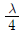
수 직접지 안테나의 실효높이는 약 몇 [m] 인가?- 26.4[m]
- 31.8[m]
- 47.7[m]
- 65.3[m]
(정답률: 70%)
48. 다음 중 Radio window의 범위를 결정하는 주요 요소에 해당하지 않는 것은?
- 잡음의 영향
- 대류권의 영향
- 전리층의 영향
- 도플러 효과의 영향
(정답률: 86%)
49. 구형 도파관의 가로가 4[cm], 세로가 2.5[cm]일 때 TM11모드의 전자파에 대한 차단 파장은 약 몇 [cm] 인가?
- 3[cm]
- 3.6[cm]
- 4.3[cm]
- 4.8[cm]
(정답률: 77%)
50. 특성 임피던스가 75[Ω]인 급전선에 복사 임피던스가 1⑤ + j45[Ω] 인 안테나를 연결하였다. 급전선 상의 전압 정재파비의 크기는 약 얼마인가?
- 1.4
- 1.5
- 1.8
- 2.1
(정답률: 알수없음)
51. 모든 방향성으로 균일하게 전파를 복사하는 안테나은?
- 등방성 안테나
- 광대역 안테나
- 파라볼라 안테나
- 전방향성 안테나
(정답률: 84%)
52. 안테나가 광대역성을 갖도록 하는 일반적인 방법으로 적합하지 않은 것은?
- 안테나의 Q를 낮추는 방법
- 보상회로를 사용하는 방법
- 자기 상사형으로 하는 방법
- 급전 여진형의 소자를 이용하는 방법
(정답률: 50%)
53. 극초단파 이상에서 사용되는 파라볼라 안테나에 대한 설명으로 적합하지 않은 것은?
- 부엽이 비교적 적다.
- 경량이며, 제작이 용이하다.
- 비교적 소형이고, 구조가 간단하다.
- 지향성이 예민하며 이득이 크다.
(정답률: 64%)
54. 다음 중 전파의 손실을 예측하는 것과 가장 관계가 적은 것은?
- 전파의 형식
- 전파통로의 거리
- 송수신 안테나의 높이
- 전파통로의 지형조건
(정답률: 60%)
55. Corner reflector 안테나에 대한 설명으로 가장 적합하지 않은 것은?
- 지향성은 반사기 면적, 다이폴의 위치에 따라 다르다.
- 각도 θ와 영상수 N=
 가 되고, 반치각은 약 60도이다.
가 되고, 반치각은 약 60도이다. - 구조가 간단하고 이득이 높아 전후방비가 좋으며, 병렬접속이 용이하다.
- 100[MHz] ~ 1000[MHz]대의 고정통신용으로 주로 사용된다.
(정답률: 77%)
56. 다음 중 안테나의 등가잡음온도에 대한 설명으로 적합하지 않은 것은?
- 안테나의 등가잡음온도는 안테나의 양각에 따라 달라진다.
- 안테나의 등가잡음온도는 수신기의 대역폭에 직접적으로 영향을 받는다.
- 안테나의 등가잡음온도는 복사저항, 주파수, 이득 등에 따라 달라지게 된다.
- 1[GHz] 이하의 낮은 주파수에서는 우주잡음이 주잡음이고, 10[GHz] 이상의 주파수에서는 대류권잡음이 주잡음이다.
(정답률: 47%)
57. 수평 반파장 다이폴 안테나를 만들어 20[MHz]인 전파를 발사하고자 할 때 안테나의 한쪽(급전점을 중심으로 좌측 또는 우측) 길이는 약 몇 [m]로 하면 좋겠는가? (단, 단축률은 5[%]로 한다.)
- 3.6[m]
- 3.8[m]
- 7.1[m]
- 7.5[m]
(정답률: 알수없음)
58. 반치각이란 주엽의 최대 복사 강도(방향)에 대해 몇 [db]가 되는 두 방향 사이의 각을 말하는가?
- 0[db]
- -3[db]
- -6[db]
- -12[db]
(정답률: 60%)
59. 마크로스트립 안테나의 장ㆍ단점에 대한 설명으로 적합하지 않은 것은?
- 효율이 낮다.
- Low profile 방사체이다.
- 대역폭이 비교적 넓다.
- 제작형태의 융통성이 높다.
(정답률: 64%)
60. 안테나의 실효정수가 Re, Le, Ce라 할 때 안테나의 Q에 해당하지 않는 것은? (단, Re: 실효저항, ㅣe: 실효인덕턴스, Ce: 실효용량)
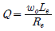
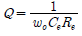
- Q=Re ωoLe
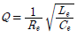
(정답률: 62%)
4과목: 무선통신 시스템
61. 무선 근거리통신망의 ISM 대역에 대한 설명으로 적합하지 않은 것은?
- 이 대역은 ITU에서 국제적으로 지정하였다.
- 산업.과학.의료 대역이라 불리우는 주파수 대역이다.
- 이 대역을 사용하기 위해서는 별도의 무선국 허가절차가 필요하다.
- 우리나라가 해당하는 제 3지역에서는 2.4 ~ 2.5 GHz 등 10여개 대역이 지정되어 있다.
(정답률: 알수없음)
62. 마이크로파 통신계에서 송신출력이 30[dbm], 송ㆍ수신 공중선 이득이 각각 32[dB], 수신기 입력레벨이 -21[dBm]일 때 자유공간 손실은 몇 [dB] 인가?
- 53[dB]
- 73[dB]
- 94[dB]
- 115[dB]
(정답률: 62%)
63. CDMA 방식의 이동통신시스템에서 발생하는 Near/Far 문제를 해결하기 위한 방법으로 가장 적합한 것은?
- 이득이 큰 안테나를 사용한다.
- 강력한 에러정정부호를 사용한다.
- 페이딩을 방지할 수 있는 회로를 사용한다.
- 무선단말기의 송신출력을 기지국에서 수신 가능한 최소 전력이 되도록 제어한다.
(정답률: 알수없음)
64. 이동전화시스템 수신기에서 다음 중 성능이 가장 우수한 방식은?
- 선택 합성법
- 동 이득 합성법
- 최대비 합성법
- 의사잡음 합성법
(정답률: 70%)
65. 이동통신시스템의 디지털화의 목적으로 가장 중요한 것은?
- 통신 보안
- 통신 방송 융합
- 무선 인터넷접속
- 주파수의 효율적 이용
(정답률: 75%)
66. 마이크로파 통신망 치국계획을 수립할 때 고려사항으로 가장 거리가 먼 것은?
- 총 경로손실
- 통신망의 성능
- 전력 소모율
- 총 장비이득
(정답률: 70%)
67. 다음 중 공전잡음을 경감시키기 위한 대책으로 가장 적합하지 않은 것은?
- 주파수 다이버시티를 이용한다.
- 수신기의 선택도를 높이도록 한다.
- 지향성이 예민한 안테나을 사용한다.
- 수신기에 잡음 억제회로(Limiter)를 사용한다.
(정답률: 알수없음)
68. 다음 중 차세대 이동통신과 관련된 주요 기술과 가장 관련이 적은 것은?
- OFDM
- MIMO
- SDR
- DQDB
(정답률: 60%)
69. 마이크로파 중계 방식 중 각 중계소에서 회선의 일부를 따내어서 구간통화를 해야 하는 경우에 편리한 방식은?
- 무급전 중계 방식
- 직접 중계 방식
- 복조 중계 방식
- 헤테로다인 중계 방식
(정답률: 알수없음)
70. CDMA 방식의 이동시스템에서 사용되는 PN 코드가 만족해야 하는 기본조건으로 적합하지 않은 것은?
- 런(RUN) 특성
- 코드 발생의 용이성
- 높은 상호 상관 특성
- 예리한 자기 상관 특성
(정답률: 55%)
71. 위성통신의 궤도 중 적도면과 궤도 경사각이 90도를 넘는 궤도는?
- 극궤도
- 타원궤도
- 정지궤도
- 태양동기궤도
(정답률: 62%)
72. 이동통신 시스템에서 기지국 커버리지(셀반경)를 확대하기 위한 방안으로 적당한 것은?
- 기지국의 주파수를 추가 배정한다.
- 안테나의 높이 및 이득을 조정한다.
- 기지국의 셀 분할 또는 기지국 채널을 증설한다.
- 기지국의 안테나를 옴니(전방향성) 안테나로 교체한다.
(정답률: 알수없음)
73. 이동전화시스템의 기본구성 중 가입자의 이동전화 서비스를 제공하기 위하여 가입자의 위치 정보 등 필요한 정보를 저장하고 있는 것은?
- BS
- MSC
- HLR
- VLR
(정답률: 64%)
74. 이동통신에서 차량속도를 v, 파장을 λ, 수신기 이동방향기준 전파입사각을 θ라 할 때, 도플러 주파수(fd)는?
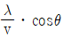
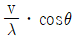
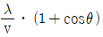
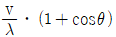
(정답률: 알수없음)
75. 무선랜 단말기 상호간 무선 구간에서의 충돌 방지를 위해 사용하는 IEEE 802.11의 방식은?
- CSMA/CD
- CSMA/CA
- TDMA/TDD
- Token passing
(정답률: 70%)
76. 다음 중 LNB의 구성 요소가 아닌 것은?
- Mixer
- LNA
- TWTA
- 국부 발진기
(정답률: 92%)
77. 마이크로파 통신링크에서 BER의 열화 원인과 거리가 먼 것은?
- 열잡음 및 간섭
- 증폭기의 선형성
- 강우로 인한 신호 감쇠
- 대역폭 제한에 의한 Inrer Symbol Interence
(정답률: 75%)
78. 이동전화시스템(CDMA)에서 전력제어 목적으로 적합하지 않은 것은?
- 수신기 열잡음 개선
- 균일한 통화 품질 유지
- 이동국 배터리 수명 연장
- 인접 기지국 통화 용량의 최대화
(정답률: 50%)
79. 다음 중 통신망 설계시 상세설계서에 작성하여야 할 항목이 아닌 것은?
- 예산서
- 공사기간
- 예정공정표
- 자재명세셔
(정답률: 34%)
80. 멀티빔(Multi Beam) 위성통신방식에 대한 설명으로 적합하지 않은 것은?
- 전송용량을 증대할 수 있다.
- 주파수를 유효하게 이용할 수 있다.
- 지구국 수신 안테나를 소형으로 할 수 있다.
- 싱글빔 방식에 비해 위성 안테나의 제어가 용이하다.
(정답률: 100%)
5과목: 전자계산기 일반 및 무선설비기준
81. 컴퓨터 메모리에 저장된 바이트들의 순서를 설명하는 용어로 바이트 열에서 가장 큰 값이 먼저 저장되는 것은?
- Large-endian
- Small-endian
- big-endian
- little-endian
(정답률: 알수없음)
82. 2진수 1001에 대한 해밍 코드로 옳은 것은?(단, 짝수 패리티 체크를 사용한다.)
- 0011001
- 1000011
- 0100101
- 0110010
(정답률: 90%)
83. 마이크로프로세서의 전송명령 없이 데이터를 입.출력장치에서 메모리로 전송할 수 있는 것은?
- DMA
- Interrupt
- FIFO
- SCAN
(정답률: 93%)
84. 그림과 같이 병렬가산기의 입력에 데이터를 인가하였을 때 이 회로의 출격 F에 대한 설명으로 옳은 것은?
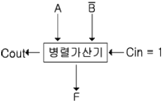
- 가산
- 감산
- A를 전송
- A를 1증가
(정답률: 65%)
85. 기억장치에 기억되어 있는 정보의 내용 또는 그의 일부에 의해서 기억되어 있는 위치에 접근하여 정보를 읽어내는 장치는?
- 연관기억장치(Associative)
- 가상기억장치(Virtual Memory)
- 캐시기억장치(Cache Memory)
- 보조기억장치(Auxiliary Memory)
(정답률: 알수없음)
86. 다음 중 센서 네트워크를 위한 운영체제는?
- bluetooth
- IEEE802.3
- tinyOS
- palmOS
(정답률: 70%)
87. 다음 중 ALU에서 처리되지 않는 것은?
- 가산
- 증가
- 자리이동
- 점프
(정답률: 74%)
88. 컴퓨터에서 인터럽트(interrupt) 발생시 return address를 기억시키는 장소는?
- stack
- program counter
- accumulator
- data bus
(정답률: 75%)
89. 다음 중 16bit Micro processor의 내부 신호 중 버스 아비트레이션 제어 신호에 해당하지 않는 신호명은?
- 버스 레어(Bus Error)
- 버스 리케스트(Bus Request)
- 버스 그랜트(Bus Grant)
- 버스 그랜트 Ack(Bus Grant Acknowledge)
(정답률: 91%)
90. 주기억장치의 용량이 1024KB인 컴퓨터에서 32비트의 가상주소를 사용하는데, 페이지의 크기가 1K워드이고 1워드가 4바이트 라면 실제 페이지 주소와 가상 페이지 주소는 몇 비트씩 구성되는가?
- 실제 페이지 주소 = 7, 가상 페이지 주소 = 12
- 실제 페이지 주소 = 7, 가상 페이지 주소 = 20
- 실제 페이지 주소 = 8, 가상 페이지 주소 = 12
- 실제 페이지 주소 = 8, 가상 페이지 주소 = 20
(정답률: 알수없음)
91. 전파자원의 공평하고 효율적인 이용을 촉진하기 위하여 필요한 경우에 시행하여야 하는 사항이 아닌 것은?
- 주파수 회수
- 주파수 분배의 변경
- 새로운 기술 방식으로의 전환
- 이용중인 주파수의 이용효율 향상
(정답률: 알수없음)
92. 긴급통신. 안전통신 또는 비상통신에 관한 의무를 이행하지 아니한 자에 대한 벌칙으로 가장 적합한 것은?
- 200만원 이하의 과태료
- 300만원 이하의 과태료
- 1년 이하의 징역 또는 500만원 이하의 벌금
- 3년 이하의 징역 또는 2000만원 이하의 벌금
(정답률: 24%)
93. 전파정책심의위원회의 위원의 임기는 몇 년 인가?
- 1년
- 2년
- 3년
- 5년
(정답률: 42%)
94. 유도식 통신설비에서 발사되는 기생발사강도는 기본파에 대하여 몇 데시벨 이하이어야 하는가?
- 10 데시벨
- 30 데시벨
- 50 데시벨
- 60 데시벨
(정답률: 42%)
95. 무선방위측정장치의 설치장소로부터 0.7킬로미터의 지역에 건설하려는 것 중 방송통신위원회의 승인을 얻지 않아도 되는 것은?
- 가공선
- 고가 케이블
- 철도ㆍ궤도 및 삭도
- 매설하는 통신용 케이블
(정답률: 55%)
96. 다음 중 무선국이 갖추어야 할 개설 조건에 속하지 않는 것은?
- 통신사항이 개설목적에 적합할 것
- 개설목적의 달성에 필요한 최소한의 공중선전력응 사용 할 것
- 무선설비는 선박의 항행에 지장을 주지 아니하는 장소에 설치할 것
- 이미 개설되어 있는 다른 무선국의 운용에 지장을 주지 아니할 것
(정답률: 70%)
97. 다음 중 주파수 이용실적의 판단기준에 속하지 않는 것은?
- 전파 관련산업의 동향
- 전파이용기술의 발전추세
- 국제적인 주파수의 사용동향
- 인명안전 등의 공익적 필요성
(정답률: 알수없음)
98. “특정한 주파수의 용도를 정하는 것” 으로 정의되는 것은?
- 주파수할당
- 주파수분배
- 주파수지정
- 주파수재배치
(정답률: 알수없음)
99. 다음 ( )안에 들어갈 내용으로 가장 적합한 것은?
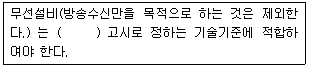
- 체신청장
- 전파연구소장
- 방송통신위원회
- 지식경제부장관
(정답률: 알수없음)
100. 다음 ( )안에 들어갈 내용으로 가장 적합한 것은?
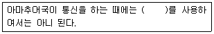
- 암어
- 약어
- 음어
- 약호
(정답률: 84%)